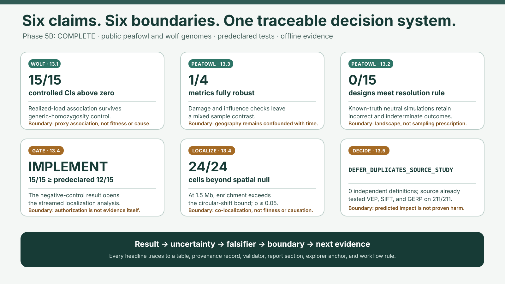
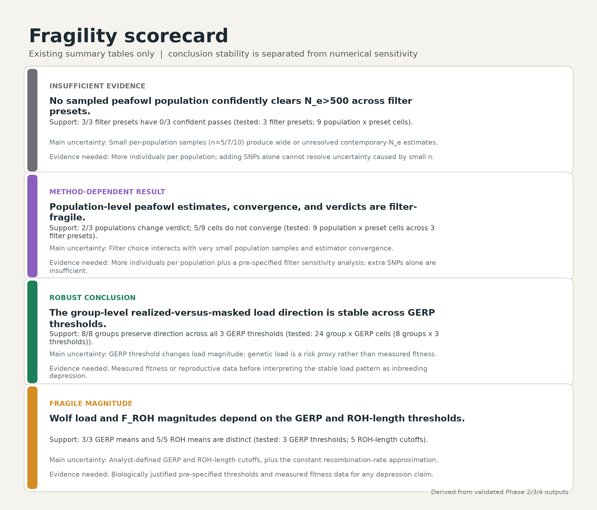
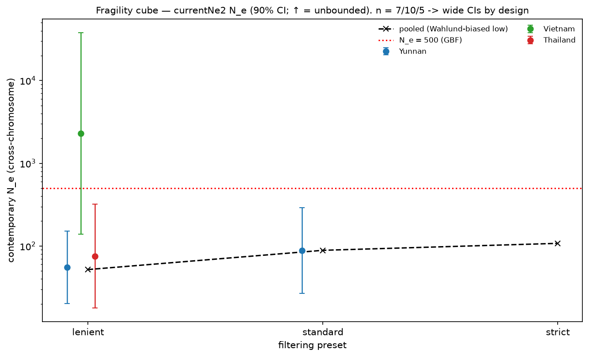
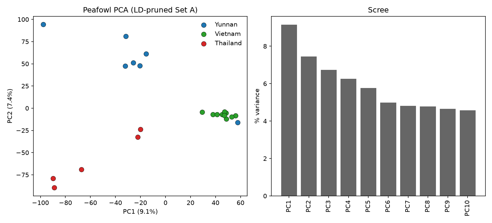
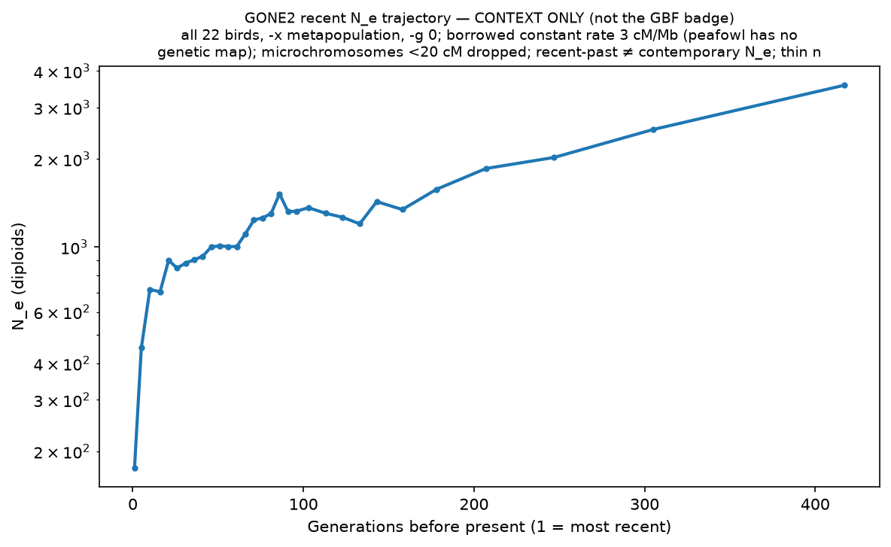
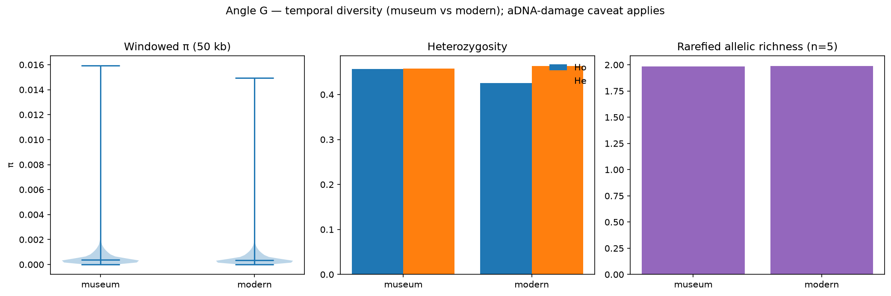

Modern peafowl main analysis
Twenty-two unrelated birds across three populations, with only 5–10 individuals each.
Admissions portfolio · Computational conservation genomics
A reproducible reanalysis of public whole-genome data asks whether conservation conclusions survive reasonable analyst choices—or move when filtering, structure, GERP-defined predicted-impact classes, and ROH definitions move.
Phase 5B status: COMPLETE · clean offline release verified · two species · one config-driven workflow · audit record

The project in 90 seconds
Conservation indicators compress complex genomic evidence into decisions. This project refuses to select one convenient parameter setting. It asks what stays true across reasonable choices—and treats uncertainty as a result rather than a nuisance.
Does a conservation conclusion survive defensible analysis choices?
If the signal is specific, its direction should survive the predeclared controls.
Move thresholds, remove damage-prone changes, relabel samples, and simulate known truth.
Keep every null, unexpected, failed, and indeterminate outcome in the evidence.
Narrow the wording when a method, individual, or negative control changes the interpretation.
State the numeric observation that would reverse or reopen each decision.
Translate uncertainty into the next informative measurement—not a causal claim.
Twenty-two unrelated birds across three populations, with only 5–10 individuals each.
Published anchor reproduced to floating-point precision, with exact raw counts.
No sampled population confidently clears Ne > 500.
FROH–realized-load association remains after the declared generic-homozygosity control.
Central contribution
The original contribution is a causal-safe evidence system: predeclared sensitivity surfaces, falsification and negative controls, known-truth study-design calibration, and numeric rules for what evidence would change each conclusion.
Two study chapters
The headline and the magnitude are evaluated separately. Teal marks evidence that held; amber marks sensitivity that must stay visible.
Chapter 01 · Green peafowl
Across three filter presets, no sampled population confidently clears Ne > 500. Damage-aware checks leave 1/4 metrics fully museum-higher across every numerical stress test; two of four point estimates are museum-higher, with exact-label p-values from 0.331 to 0.831.
Chapter 02 · Scandinavian wolf system
At GERP > 4, deposited raw counts reproduce exactly across all 211 wolves. Across the full 3 × 5 grid, individual FROH–realized-load association remains positive after controlling generic homozygosity.
The interpretation survives the tested choices.
The direction holds, but the number moves materially.
The data do not support a forced yes/no decision.
A different timescale or assumption informs—but does not decide.
Corrections and falsifiers
These are decision rules, not decorative caveats. The observed value, threshold, uncertainty source, and evidence that would change the wording are delivered as a machine-readable claim trace.
Wolf association · §13.1
15 / 15partial realized-load CIs above zeroWould stop localization: fewer than 12 of 15 predeclared cells.
Temporal contrast · §13.3
1 / 4fully museum-higher metricsWould upgrade: 4 of 4 through every numerical check, plus a design separating time from geography.
Ne design · §13.2
0 / 15tested designs resolve both predeclared resolution truths (Ne=250 and 1,000)Resolution rule: correct Wilson lower ≥0.70 and incorrect Wilson upper ≤0.25 for true Ne 250 and 1,000. This supplies no empirical sample-size prescription.
ROH localization · §13.4
24 / 24long-ROH population × GERP cells beyond nullDecision: IMPLEMENT. A cell would change classification if observed enrichment no longer exceeds the circular-shift 97.5th percentile or two-sided p exceeds 0.05.
Annotation independence · §13.5
0 / 1independent definitions availableDecision: DEFER_DUPLICATES_SOURCE_STUDY. The source-class overlap is 211/211. Reopen with ≥1 independent definition, ≥0.95 common-sample coverage, and ≥0.90 auditable callable-denominator coverage; predicted classes are not proven harm.
Research corrections
Check: LD-based Ne reads signal from LD.
Correction: retain unpruned Set A for currentNe2; use its pruned derivative for structure.
Consequence: pruning no longer erases the estimator's biological signal.
Check: it estimates a different time horizon and needs a borrowed recombination rate.
Correction: keep it as trajectory context only.
Consequence: unlike quantities no longer compete for one badge.
Check: transversions, all 462 labels, equal-n and leave-one cases.
Correction: only 1/4 metrics remains museum-higher through every check, and geography remains confounded.
Consequence: report a mixed sample contrast, not erosion.
Check: control generic GERP-covered homozygosity.
Correction: realized association survives; masked association disappears.
Consequence: localization is reopened, while fitness causation remains outside the data.
Trace this claim
Genomic-proxy association only; no fitness, depression, or causal effect measured.
Geography blocks a temporal-erosion claim; diversity is not fitness.
Neutral scenario calibration is separate from unknown-truth, dependent empirical downsampling and gives no exact real-sample guarantee.
The 15/15 association gate opened the localization analysis.
Eligible calls at assayed SNP records are the denominator; localization is not fitness, harm, or causation.
0/1 independent definitions; 211/211 source-class overlap. Reopen only at the declared independence and coverage thresholds.
Fragility Explorer
The Streamlit explorer is deliberately read-only: heavy analysis happens in the reproducible workflow, while the interface exposes precomputed sensitivity results without changing the evidence.
No-install scientific decision lab
Phase 5B scientific analyses complete · static exact outcomes shown while local rows load
Within-cohort ranks; choose the declared outcome and negative-control model.
15/15 primary · 15/15 partial realized-load intervals lie above zero across the frozen surface.
Association among genomic proxies; not measured fitness or causal inbreeding depression.
Every metric remains visible, including directions that oppose erosion.
1/4 fully direction-concordant after every declared damage and influence check.
| Metric | Museum − modern | 95% interval | Exact p | Direction |
|---|---|---|---|---|
| Loading… | ||||
Geography is confounded with period; a damage-reduced direction cannot identify temporal erosion.
Scenario outcomes stay separate from empirical downsampling.
0/15 tested designs qualify. The neutral scenarios calibrate the decision pipeline; they do not prescribe an exact empirical sample size.
Simplified neutral truth calibrates this pipeline; it is not a guarantee for a future real sample. Empirical observed-n repetitions reuse one individual subset and lower-n subsets overlap, so their Wilson bands describe seeded subset/marker-panel sensitivity, not independent biological-sampling uncertainty.
Observed burden per eligible polarized SNP-genotype call against within-chromosome circular interval shifts.
§13.4 IMPLEMENT · 24/24 predeclared long-ROH population × GERP cells exceed the null upper bound with p ≤ 0.05.
The denominator counts eligible calls at assayed SNP records, not callable genomic bases; ascertainment remains. Localization between genomic proxies only—not individual harm, fitness, causal inbreeding depression, or a management-unit result.
Run locally
No extra hardware is required. The app reads tracked outputs; it does not rerun whole-genome analysis.
streamlit run app/streamlit_app.py
Key evidence
Each figure links to its full-resolution artifact. Captions state what the visual supports—and what it cannot establish.

Fragility scorecardThe cross-chapter synthesis: robust verdicts, moving magnitudes, and insufficient evidence.
Ne fragility cubeWide intervals and non-convergence make a three-state verdict necessary.
Population structurePCA supports geographic structure; small samples constrain precision.
Trajectory contextUseful historical context, not a competing contemporary verdict.
Temporal contrastWeak and metric-dependent; it does not prove genetic erosion.Complete deliverable library
Every public-facing artifact is explained below. Begin with the brief, follow the reasoning, inspect the evidence, or reproduce the complete workflow.
26 deliverables
A four-page walk from the initial questions through model choices, corrections, secondary hypotheses, final verdicts, and the project’s scientific contribution.
Read the briefA single visual tracing both public datasets through analyst choices to robust, sensitive, and unresolved conclusions.
Open full sizeThe complete scientific account: data, methods, dynamically sourced results, interpretation, limitations, and references.
Open the reportWhy the design changed, what went wrong, how evidence corrected the mental model, and where responsibility sits.
Follow the journeyConcise definitions, methodological defenses, likely follow-ups, a figure-reading exercise, and a spoken summary.
Review the notesA short, evidence-led walkthrough showing exactly which controls to move and how to explain the response.
Open the scriptThe read-only interface for filter × structure peafowl verdicts, wolf GERP × ROH sensitivity, and the evidence-change map.
View the app sourceFour portable views covering the peafowl verdict, structure and diversity, wolf sensitivity, and limitations.
Browse the galleryProof that every filter × structure state and every wolf sensitivity state renders successfully.
Read the test recordThe human-readable filter × structure result set behind every contemporary Ne verdict shown in the explorer.
Download the cubeFour central conclusions classified by verdict stability, estimate sensitivity, limitation, and next evidence.
The Ne > 500 indicator, verdict robustness, and country-scale Populations Maintained result.
Per-individual realized/masked load across three GERP thresholds and FROH across five length cutoffs.
Six headline and gate outcomes joined to uncertainty, numeric mind-change conditions, provenance, validators, report sections, explorer panels, and workflow rules.
Download the traceAll 462 temporal allocations, damage and influence checks, 60 known-truth Ne scenarios, and empirical sensitivity rows remain machine-readable.
The complete individual 3 × 5 robustness surface and eligible-SNP-genotype ROH-localization results, including circular-shift null outcomes, ascertainment caveats, and reconciliations.
A generated inventory of delivered machine tables, columns, storage types, completeness, row counts, and definitions.
The independent numeric, uncertainty, traceability, dictionary, report, explorer, provenance, and offline-data gate.
Inspect the gateThe per-phase gates preserve scientific warnings alongside pass/fail results, and the scorecard reconciles its synthesis to the underlying tables.
The Phase-5A artifact, portability, app, and scientific readiness gate, retained as the historical baseline for the Phase-5B release.
Inspect the checksThe dynamic gate covers local targets, essential artifact coverage, semantic structure, accessibility affordances, responsiveness, and offline operation.
Inspect the current checksThe recorded clean-clone command, resolved determinism issues, job outcome, and matching output hashes for the Phase-5A baseline.
Read the recordTwo isolated clean-science builds, bounded memory, matching science hashes and manifests, final-source reconciliation, and no-op proof.
Read the recordThe complete analysis DAG and the authoritative thresholds, paths, sensitivity settings, and seeds.
An exact osx-64 software lock plus setup notes explaining the laptop-safe installation and source-built tools.
The phase-by-phase completion table, locked decisions, risks, learning track, and recorded deviations.
No deliverables match that search. Try a broader term.
Exhaustive artifact index
The portfolio cards above are the recommended reading path. These expandable groups expose the complete public artifact set without making low-level outputs compete with the scientific story.
Reproducibility
The static portfolio needs no software to read. Reproducing the analysis uses a pinned environment, source-built tools, declared thresholds, and a Snakemake DAG designed for an 8 GB laptop. The canonical phase5b target rebuilds the analytical chain and its generated claim trace; the linked audit record verifies the clean builds, hashes, manifests, resource bound, and final no-op.
Scientific maturity
The project makes its boundary explicit: a reproducible public-data reanalysis can demonstrate analytical sensitivity and conservation risk, but not measured inbreeding depression or new field evidence.
Not: “all true population sizes are known to be below 500.”
Not: “genetic load has directly caused reduced survival or fertility.”
It uses an approximate recombination rate and does not decide the contemporary verdict.
A future design needs prospective calibration under its own sampling and ascertainment process; empirical downsampling here has unknown truth and dependent, overlapping subsets.
“An uncertain estimate is not an empty result. It tells us what the present data cannot yet support.”